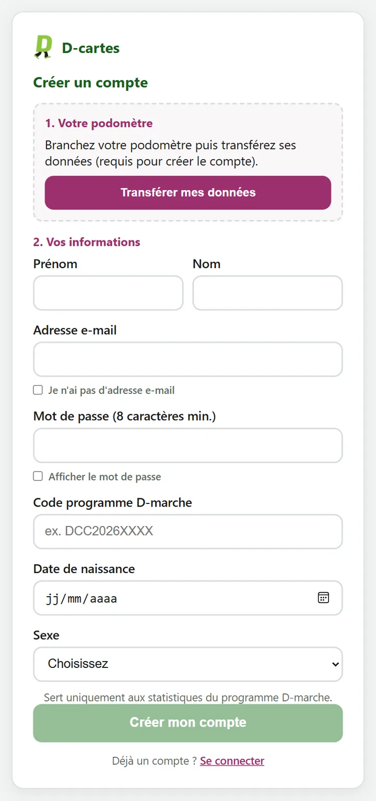
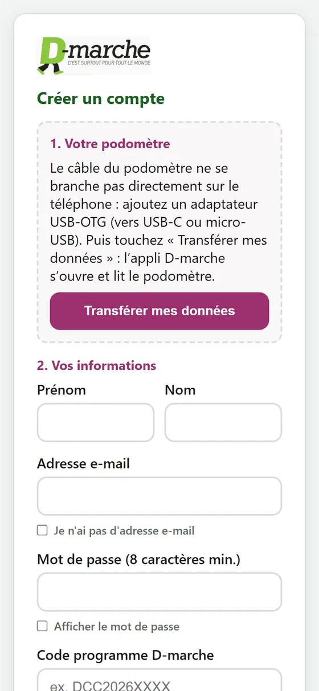
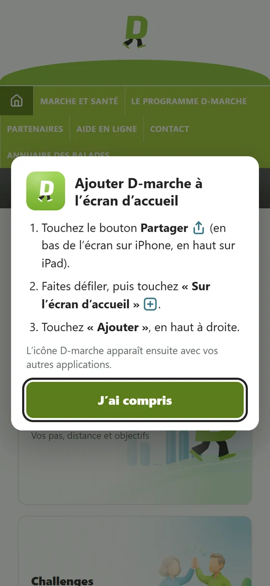
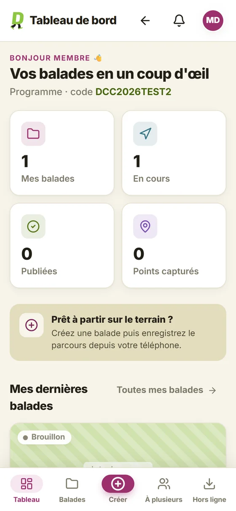
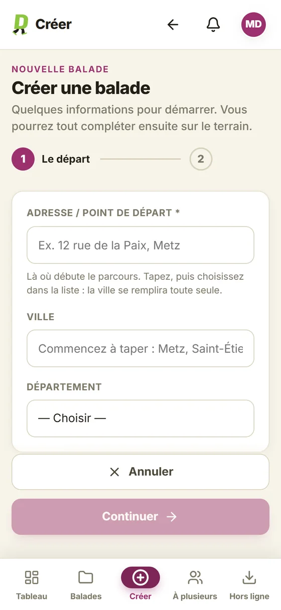
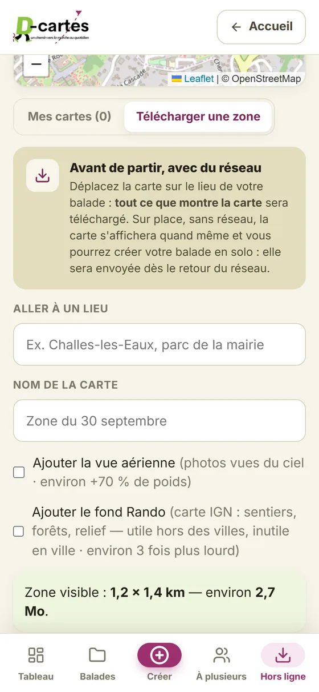

Le module D-cartes va permettre aux participants de cartographier et de partager leurs balades. Avant de le mettre en service, nous le testons tous ensemble. Nul besoin d'être à l'aise avec la technique : utilisez-le comme vous le feriez vraiment, à votre rythme, et partagez dans le groupe WhatsApp ce qui vous a aidé, gêné ou surpris. Chaque remarque compte : un bouton que vous ne trouvez pas, c'est déjà une vraie trouvaille !
Bon à savoir : cette fenêtre peut revenir de temps en temps, par exemple après avoir fermé le navigateur. Il suffit de ressaisir les mêmes informations.
Connexion requise
https://recette.dmarche.org
dmarche
••••••••
AnnulerSe connecter
2
Étape 2Créer votre compte test
Pour créer votre compte, le site lit votre podomètre D-marche. Préparez-le, ainsi que le code programme que vous a donné Frédérick. Vous pouvez vous inscrire au choix sur un ordinateur ou sur un téléphone Android.
Avec le câble USB du podomètre, dans Chrome ou Edge : Safari et Firefox ne savent pas lire le podomètre.
Sur la page d'accueil du site de test, saisissez votre adresse e-mail, puis cliquez sur Continuer. Le site vous propose de créer un compte.
Branchez le podomètre, puis cliquez sur Transférer mes données. Choisissez le podomètre dans la fenêtre qui s'ouvre et patientez environ 5 secondes : le message « Données transférées » confirme la lecture.
Remplissez vos informations : prénom, nom, adresse e-mail, un mot de passe d'au moins 8 caractères et le code programme. La date de naissance et le sexe sont facultatifs.
Cliquez sur Créer mon compte. Vous arrivez sur votre espace, avec « Bonjour » et votre prénom.

La page d'inscription sur ordinateur
Avec un câble USB-OTG : un petit adaptateur qui permet de brancher le podomètre sur la prise du téléphone.
Installez d'abord l'application gratuite « D-marche » depuis le Play Store. Elle ne sert qu'à lire le podomètre.
Dans Chrome, sur la page d'accueil du site de test, saisissez votre adresse e-mail puis touchez Continuer.
Branchez le podomètre au téléphone, puis touchez Transférer mes données. L'application D-marche s'ouvre et lit le podomètre ; acceptez si le téléphone demande l'accès à l'appareil USB.
Vous revenez automatiquement sur le formulaire : remplissez vos informations, puis touchez Créer mon compte.

L'inscription sur un téléphone Android
Et sur iPhone ? L'inscription n'y est pas possible : Apple ne permet pas de lire le podomètre. Une fois votre compte créé sur un ordinateur ou un Android, vous pourrez en revanche vous connecter depuis un iPhone, avec votre adresse e-mail et votre mot de passe.
3
Étape 3Mettre D-marche sur l'écran d'accueil
Pour retrouver D-marche d'un seul geste, comme une application, ajoutez-le à l'écran d'accueil de votre téléphone. Une fois connecté, touchez le bouton vert Ajouter à l'écran d'accueil, juste sous « Bonjour ».
Apple n'autorise pas l'installation en un clic : le bouton affiche les trois gestes à faire dans Safari.
Touchez le bouton Partager : un carré avec une flèche vers le haut.
Faites défiler, puis touchez Sur l'écran d'accueil.
Touchez Ajouter, en haut à droite.
Une fenêtre s'ouvre : touchez Installer ou Ajouter. Si rien ne s'ouvre, le bouton affiche les gestes à faire :
Touchez le menu ⋮ en haut à droite de Chrome.
Touchez Ajouter à l'écran d'accueil ou Installer.
Confirmez avec Ajouter.
L'icône « D-marche TEST » apparaît ensuite parmi vos applications. Son bandeau orange la distingue de la future application D-marche définitive.
Sur la plateforme de test, l'icône peut vous redemander le mot de passe commun de l'étape 1 à l'ouverture. Vous l'aviez installée avant le 29/09, sans bandeau orange ? Supprimez-la (appui long sur l'icône, puis « Supprimer ») et ajoutez-la à nouveau.

La fenêtre d'aide sur iPhone
4
Étape 4 · avant de marcherAutoriser la position GPS
D-cartes trace votre balade avec le GPS du téléphone, en passant par le navigateur (Safari ou Chrome). Trois réglages doivent être faits une seule fois, de préférence chez vous, avant la première sortie. Choisissez votre téléphone :
1
Accepter quand le site demande votre position
Au démarrage d'un repérage, le navigateur affiche une question du type « recette.dmarche.org souhaite connaître votre position ». Répondez Autoriser.
Si vous avez refusé par erreur : Réglages → Safari → Position → Demander ou Autoriser, puis rechargez la page.
Si vous avez refusé par erreur : touchez le cadenas ou le ⓘ à gauche de l'adresse → Autorisations → Position → Autoriser, puis rechargez la page.
Sinon : D-cartes affiche « Localisation refusée ». La carte ne vous suit pas et aucun tracé n'est enregistré.
2
Activer la position « précise »
Les téléphones récents peuvent ne donner qu'une position approximative. Pour tracer un chemin, il faut la position précise.
Réglages → Confidentialité et sécurité → Service de localisation → activé. Dans la même liste : Safari → Lorsque l'app est active, et activer Position exacte.
Réglages → Applications → Chrome → Autorisations → Position → activer Utiliser la position exacte. Puis Réglages → Localisation → Services de localisation → Précision de la localisation Google → activé.
Sinon : la position peut être fausse de plusieurs centaines de mètres. D-cartes ne garde que les points précis à moins de 50 m près : le tracé ne démarre pas, et le message « Position approximative » s'affiche.
3
Laisser la localisation du téléphone allumée
C'est l'interrupteur général « Localisation » (ou « Service de localisation »), dans le volet de réglages rapides ou dans les Réglages.
Sinon : aucun site ni aucune application ne reçoit de position. D-cartes affiche « Aucune position GPS » au bout de quelques secondes.
Pendant la marche
Gardez D-cartes à l'écran. Si vous passez sur une autre application ou si l'écran s'éteint, le téléphone met la page en pause : le GPS et le chrono s'arrêtent. Au retour, D-cartes vous prévient que l'enregistrement s'est interrompu, mais le chemin parcouru entre-temps est perdu (il apparaît en ligne droite).
Pour économiser la batterie, touchez le bouton veille écran : l'écran devient noir mais l'enregistrement continue. Touchez l'écran pour revoir la carte.
Au départ, patientez à l'air libre quelques secondes : le GPS a besoin de voir le ciel. Il est moins précis entre de hauts immeubles, sous un couvert épais ou à l'intérieur.
Et maintenantCe que nous vous demandons de tester
Quatre missions, à faire dans l'ordre qui vous arrange. Pour chacune, notez ce qui a été facile et ce qui vous a fait hésiter.
Mission 1
Cartographier une vraie balade
Depuis l'accueil, touchez la tuile Créer une balade : l'application D-cartes s'ouvre. Touchez le bouton rond Créer en bas de l'écran, indiquez le point de départ, puis Créer & démarrer le repérage.
Marchez votre parcours : ajoutez une Étape à chaque changement de direction, et un Point d'intérêt (banc, point de vue, danger…) quand quelque chose mérite d'être signalé, avec une photo si possible.

Le tableau de bord

Le point de départ
Mission 2
Finaliser et relire
À la fin de la marche, touchez Finaliser la balade. Relisez les textes, corrigez un point ou le tracé si besoin, puis téléchargez la fiche PDF et regardez-la, idéalement imprimée. Terminez par Soumettre au modérateur.
Mission 3 · la plus précieuse
Marcher sans réseau
Avant de partir, ouvrez l'onglet Hors ligne en bas de l'application et touchez « Télécharger une zone » pour garder la carte du lieu, en Wi-Fi de préférence.
Sur place, mettez le téléphone en mode avion et créez votre balade avec le seul GPS. Ce test ne peut se faire qu'en marchant : c'est lui qui nous apprend le plus.

Cartes hors ligne
Mission 4
Faire le tour du reste
Explorez librement : l'annuaire des balades, Ma D-marche, les challenges, votre profil. Tout ce qui vous semble peu clair nous intéresse.
Vos retours, dans le groupe WhatsApp
Tous les retours passent par le groupe WhatsApp des testeurs D-cartes, dont vous faites déjà partie. Trois réflexes rendent un retour vraiment utile :
Une capture d'écranDe ce que vous voyez. Sur la plupart des téléphones : bouton de volume bas et bouton de mise en veille en même temps.
Ce que vous vouliez fairePar exemple « je voulais ajouter une photo à mon banc ». C'est souvent plus utile que la description du problème.
Un message par sujetPour que chaque retour puisse être suivi et traité séparément.
Nous lisons tout, mais nous ne corrigerons pas tout de suite : chaque changement est d'abord validé par l'équipe D-marche, et les sujets importants sont discutés en comité de pilotage.
En cas de souciLes questions fréquentes
La fenêtre « Connexion requise » revient
C'est la protection du site de test : ressaisissez dmarche et le mot de passe commun.
J'ai oublié mon mot de passe personnel
Sur la page de connexion, touchez « Mot de passe oublié ? » : un lien vous est envoyé par e-mail.
« Transférer mes données » ne trouve pas le podomètre
Sur ordinateur, utilisez Chrome ou Edge, débranchez puis rebranchez le podomètre et réessayez. Sur Android, vérifiez que l'application D-marche est installée et que le câble USB-OTG est bien enfoncé.
Ma position n'apparaît pas, ou le tracé est décalé
Vérifiez les trois réglages de l'étape 4, puis marchez quelques instants à découvert : le GPS est moins précis entre des immeubles ou sous les arbres. Signalez-le quand même dans le groupe, avec le lieu.
Une page reste bloquée
Fermez-la, rouvrez le site, puis dites-nous ce que vous faisiez juste avant.
Une autre question ?
Écrivez dans le groupe WhatsApp : Frédérick y répond.